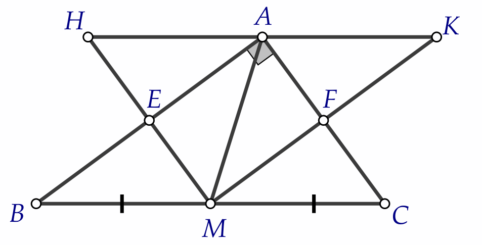
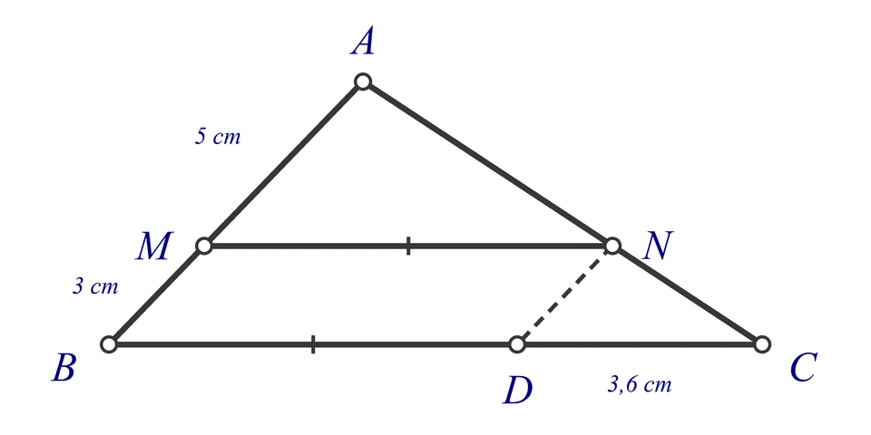
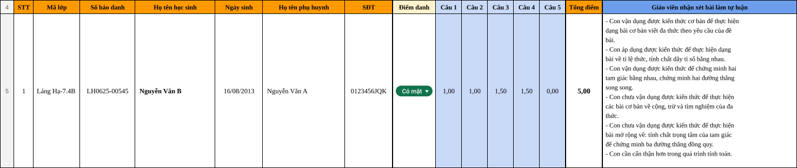

NĂM HỌC 2026 - 2027
Rà soát bao quát lớp, tiến độ khung chương trình, quy chuẩn file bài học và kỷ luật tác phong.
Theo dõi tiến độ Khối 8 từ Tuần 10: Trọng tâm Ôn tập tổng hợp, Kiểm tra Quý I (Tuần 12) & khung chương trình Tháng 10 - Tháng 11.
8 phương pháp phân tích đa thức thành nhân tử; các lỗi sai thường gặp và lưu ý thay đổi SGK
Kế hoạch khảo sát định kỳ Quý I Tuần 12, quy chế chấm bài, hướng dẫn nhập điểm & nhận xét chuẩn.
Đề nghị toàn thể Giáo viên nghiêm túc chấn chỉnh và thực hiện đúng tác phong chuẩn MathExpress.
| Thời gian | Buổi | Định hướng chuyên | Nâng cao | Mở rộng & Cơ bản | |
|---|---|---|---|---|---|
| Tháng 9 | 10/09 - 16/09 | 10 | Hình thoi - Hình vuông | Phân tích đa thức thành nhân tử (buổi 1) | Hình thoi - Hình vuông |
| 17/09 - 23/09 | 11 | Ôn tập tứ giác đặc biệt | Phân tích đa thức thành nhân tử (buổi 2) | Ôn tập tổng hợp (Phép tính đa thức + HĐT + Tứ giác đặc biệt) | |
| 24/09 - 30/09 | 12 | Kiểm tra quý 1 | Kiểm tra quý 1 | Kiểm tra quý 1 | |
| Tháng 10 | 01/10 - 07/10 | 13 | Tính chất chia hết với số nguyên (buổi 1) | Hình thoi - Hình vuông | Ôn tập tứ giác đặc biệt |
| 08/10 - 14/10 | 14 | Tính chất chia hết với số nguyên (buổi 2) | Tính chất chia hết với số nguyên | Phân tích đa thức thành nhân tử (buổi 1) | |
| 15/10 - 21/10 | 15 | Định lí Thales (buổi 1) | Ôn tập tứ giác đặc biệt | Phân tích đa thức thành nhân tử (buổi 2) | |
| 22/10 - 28/10 | 16 | Định lí Thales (buổi 2) | Ôn tập các bài toán biến đổi đại số (ứng dụng của hđt và phân tích đt, biến đổi đại số để CM chia hết) | Định lý Thales (Phần 1) | |
| 29/10 - 04/11 | 17 | Bất đẳng thức (Phần 1 - PP biến đổi tương đương và xét hiệu) | Định lí Thales (Phần 1) | Định lý Thales (Phần 2)- Tính chất phân giác trong tam giác | |
| Tháng 11 | 05/11 - 11/11 | 18 | Bất đẳng thức (Phần 2 - Dựa vào các biến đổi quen thuộc từ buổi 1) | Định lí Thales (Phần 2) | Ôn tập đại số |
| 12/11 - 18/11 | 19 | Tính chất đường phân giác của tam giác | Tính chất đường phân giác của tam giác | Đường trung bình trong tam giác | |
Trọng tâm thời gian tới: Hoàn thành Hình thoi - Hình vuông & Ôn tập Tứ giác đặc biệt, chuẩn bị đợt Kiểm tra Quý I (Tuần 12); đón đầu chuyên đề Tính chất chia hết, Định lí Thales, Bất đẳng thức & Đường phân giác trong Tháng 10 - Tháng 11.
Tìm ƯCLN của các hệ số và lũy thừa với số mũ nhỏ nhất của từng biến chung: $A \cdot B + A \cdot C = A(B + C)$.
Vận dụng 7 hằng đẳng thức đáng nhớ (đặc biệt hiệu hai bình phương $A^2 - B^2$, bình phương một tổng/hiệu, tổng/hiệu hai lập phương).
Nhóm các hạng tử có nhân tử chung hoặc tạo thành HĐT; đặc biệt rèn học sinh quy tắc đổi dấu khi đặt dấu trừ trước ngoặc.
Phân tích $ax^2 + bx + c$: Tách hệ số $b = b_1 + b_2$ sao cho $b_1 \cdot b_2 = a \cdot c$, sau đó đưa về nhóm 4 hạng tử.
Thêm bớt cùng một hạng tử để tạo thành bình phương hoặc hiệu hai bình phương $A^2 - B^2$ (dạng $x^4 + 4y^4$, $x^5 + x + 1$).
Đặt $t = f(x)$ để giảm bậc đa thức, đưa các biểu thức cồng kềnh, đối xứng về tam thức bậc hai quen thuộc.
Dự đoán dạng tích của các đa thức bậc thấp hơn, khai triển rồi đồng nhất hệ số các lũy thừa cùng bậc để tìm hệ số.
Khai thác tính đối xứng vòng quanh giữa $a, b, c$; gán giá trị đặc biệt ($a = b$, $b = c$) để phát hiện nhân tử $(a - b)(b - c)(c - a)$.
Cho tam giác $ABC$ vuông tại $A$. Gọi $M, E, F$ lần lượt là trung điểm của $BC, AB, AC$. Lấy điểm $H$ thuộc tia đối của tia $EM$ sao cho $EM = EH$. Lấy điểm $K$ thuộc tia đối của tia $FM$ sao cho $FM = FK$.
a) Tứ giác $AEMF$ là hình gì? Vì sao?
b) Chứng minh $A$ là trung điểm của $HK$;
c) Tam giác vuông $ABC$ có thêm điều kiện gì thì tứ giác $AEMF$ là hình vuông?

Ta có $E, M$ lần lượt là trung điểm của $AB, BC$ nên $EM$ là đường trung bình trong $\Delta ABC$, suy ra $EM \parallel AC, EM = \dfrac{1}{2}AC$.
Mà $AF = \dfrac{1}{2}AC$ nên $EM = AF$.
Nên $AEMF$ là hình bình hành (dhnb).
Ta lại có $\widehat{CAB} = 90^\circ$.
Nên $AEMF$ là hình chữ nhật (dhnb).
Xét $\Delta ABC$ vuông tại $A$ có $AM$ là đường trung tuyến nên $AM = \dfrac{1}{2}BC = MB$, suy ra $\Delta AMB$ cân tại $M$.
Mà $E$ là trung điểm $AB$ hay $ME$ là đường trung tuyến trong $\Delta AMB$ nên $ME$ cũng là đường cao trong $\Delta AMB$.
Suy ra $\widehat{AEM} = 90^\circ$. Tương tự, $\widehat{AFM} = 90^\circ$.
Xét tứ giác $AEMF$ có $\widehat{AFM} = \widehat{AEM} = \widehat{CAB} = 90^\circ$.
Nên $AEMF$ là hình chữ nhật (dhnb).
Cách giải 1 sai vì sử dụng đường trung bình - kiến thức mà học sinh chưa được học. Đối với các kiến thức chưa học (Đường trung bình, định lí Thalès...): Giáo viên tuyệt đối chưa sử dụng đến khi học sinh được học.
Cho tam giác $ABC$. Đường thẳng song song với $BC$ cắt các cạnh $AB, AC$ tương ứng tại $M, N$ ($M \in AB; N \in AC$). Cho biết $AM = 5\text{ cm}$, $MB = 3\text{ cm}$, $BC - MN = 3{,}6\text{ cm}$. Tính độ dài $MN, BC$.

Xét tam giác $ABC$, do $MN \parallel BC$ ($M \in AB, N \in AC$), áp dụng hệ quả định lí Thalès:
$$\frac{MN}{BC} = \frac{AM}{AB} \Rightarrow \frac{MN}{BC} = \frac{5}{8} \Rightarrow \frac{MN}{5} = \frac{BC}{8}$$
Áp dụng tính chất của dãy tỉ số bằng nhau:
$$\frac{MN}{5} = \frac{BC}{8} = \frac{BC - MN}{8 - 5} = \frac{3{,}6}{3} = 1{,}2$$
Suy ra $MN = 6\text{ cm};\ BC = 9{,}6\text{ cm}$.
Qua $N$, kẻ $ND \parallel AB$ ($D \in BC$). Khi đó tứ giác $MNDB$ là hình bình hành nên $BD = MN$.
Do $D$ nằm giữa $B$ và $C$ nên $CD = BC - BD = BC - MN = 3{,}6\text{ cm}$.
Áp dụng định lí Thalès trong tam giác $ABC$:
• Vì $ND \parallel AB \Rightarrow \dfrac{CD}{BC} = \dfrac{CN}{CA}\quad (1)$
• Vì $MN \parallel BC \Rightarrow \dfrac{CN}{CA} = \dfrac{BM}{AB}\quad (2)$
$$\Rightarrow \frac{CD}{BC} = \frac{BM}{AB} \Rightarrow \frac{3{,}6}{BC} = \frac{3}{8} \Rightarrow BC = 9{,}6\text{ cm}$$
Suy ra $MN = BC - 3{,}6 = 6\text{ cm}$.
Chấm thi, nhận xét chi tiết và hoàn tất nhập điểm đúng hạn để BPCM kịp thời rà soát.
Chấm bài nghiêm túc, phản ánh đúng thực lực học sinh; thực hiện chuẩn barem đáp án, tuyệt đối không tự ý thay đổi thang điểm.
Bắt buộc bám sát hướng dẫn chấm của CLB. Nếu có vướng mắc, cần chủ động phản hồi lại ngay để được hỗ trợ và thống nhất kịp thời.
Ghi chi tiết điểm từng câu và tổng điểm rõ ràng, chính xác; giúp BPCM dễ dàng đối chiếu, rà soát và hạn chế tối đa sai sót.
Điểm bài thi có thể thay đổi sau rà soát của BPCM $\Rightarrow$ Tuyệt đối không công bố trước điểm chấm ban đầu cho học sinh.
CLB có bộ phận rà soát toàn bộ quá trình kiểm tra & check bài chấm. Trường hợp sai lệch điểm hoặc chấm sai quy chế sẽ ghi nhận biên bản vi phạm.

Đối chiếu kỹ: Họ tên – Lớp – Số báo danh trên bài thi với danh sách trước khi nhập điểm để tránh nhầm dữ liệu.
• Có thi: tích chọn Có
mặt.
• Vắng thi: tích Vắng,
không nhập điểm.
Bắt buộc sử dụng dấu phẩy (,) khi nhập điểm thập phân (ví dụ: $1,25$; $7,75$; tuyệt đối không dùng dấu chấm).
Nếu HS chưa có trong danh sách, GV chủ động bổ sung đầy đủ họ tên và thông tin trước khi nhập điểm.
Nếu điểm thành phần của một câu là 0 thì GV bắt buộc phải nhập số 0 (tuyệt đối không để trống ô).
| Dạng bài kiểm tra Khối 8 | Nội dung nhận xét chi tiết mẫu |
|---|---|
|
Con vận dụng tốt: Các dạng bài toán nhân đơn thức với đa thức, khai triển và rút gọn hằng đẳng thức đáng nhớ; áp dụng thành thạo các phương pháp đặt nhân tử chung, nhóm hạng tử và dùng hằng đẳng thức để phân tích đa thức thành nhân tử; giải bài toán tìm x đưa về dạng phương trình tích. Phần hình học con nhận biết tốt tính chất và dấu hiệu nhận biết của hình chữ nhật, hình thoi; biết vẽ hình chuẩn xác và lập luận chứng minh chặt chẽ. Con cần ôn tập thêm: Phương pháp tách hạng tử tam thức bậc hai và thêm bớt hạng tử nâng cao; cẩn thận dấu âm trước dấu ngoặc; các bài toán tìm điều kiện để tứ giác là hình vuông và bài toán tìm giá trị lớn nhất, nhỏ nhất của biểu thức đại số. |
Bộ Phận Chuyên Môn luôn sẵn sàng lắng nghe những chia sẻ, khó khăn thực tế và đóng góp quý báu từ các Thầy Cô giáo viên Khối 8 để công tác giảng dạy ngày càng hoàn thiện, chất lượng và đồng bộ trên toàn hệ thống MathExpress.
Kính chúc các Thầy Cô luôn dồi dào sức khỏe, tràn đầy nhiệt huyết và gặt hái thật nhiều thành công trong công tác giảng dạy!